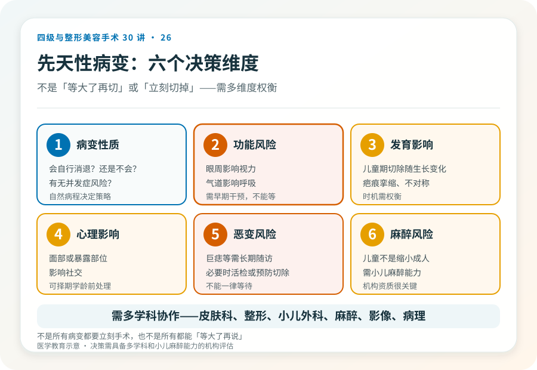

先说结论：先天性体表病变（婴幼儿血管瘤、先天性色素痣、淋巴管畸形、血管畸形等）的处理时机和方式因病种差别很大。有些需要早期药物或手术干预，有些以观察为主，决策涉及病变性质、生长发育、心理影响和功能风险。这往往需要皮肤科、整形外科、小儿外科、有时还有影像和病理的多学科协作，不是“等大了再切”或“立刻切掉”这么简单。
几类常见先天性体表病变
- 婴幼儿血管瘤：出生后数周出现，经历增生期（数月内快速增大）和消退期（数年内逐渐消退）。多数可自行消退，但位于眼周、气道、肝脏或大面积者需要早期药物（如普萘洛尔）或激光干预，少数需要手术修复消退后的残余病变。
- 先天性色素痣：出生即有。小型多数可观察或择期切除；巨大型先天性色素痣（GCN）恶变风险相对升高，处理复杂，可能需要分期切除或扩张器修复，且需长期随访监测恶变。
- 血管畸形（静脉、淋巴管、动静脉畸形）：不会自行消退，与血管瘤不同。处理因病种和部位而异，可能涉及硬化剂、栓塞、手术等，复杂者需多学科。
- 淋巴管畸形（淋巴管瘤）：常需硬化或手术，部位和体积决定难度。
- 其他：皮脂腺痣、先天性皮肤缺损等，各有处理原则。
关键区分：婴幼儿血管瘤（肿瘤性，多数消退）和血管畸形（畸形性，不消退）是两类不同疾病，处理原则不同。混淆这两类会导致错误决策。
决策的几个考量维度
- 病变性质和自然病程：是会自行消退的，还是不会的？有没有恶变或并发症风险？
- 功能风险：位于眼周（影响视力）、气道（影响呼吸）、肝脏或重要结构者，需要早期干预。
- 生长发育影响：儿童期切除可能随生长出现新问题（如疤痕挛缩、不对称），时机需权衡。
- 心理影响：面部或暴露部位病变可能影响儿童心理和社交，某些情况下择期学龄前处理。
- 恶变风险：巨痣等需要长期随访，必要时活检或预防性切除。
- 麻醉风险：儿童手术涉及小儿麻醉，需要具备小儿麻醉能力的机构。
几个必须正视的现实
- 不是所有病变都要立刻手术：婴幼儿血管瘤多数可自行消退，过度早期手术可能留下不必要的疤痕。
- 也不是所有都能“等大了再说”：影响功能的（眼周遮挡视力、气道压迫）或快速增大的，需要及时干预，等待会造成不可逆后果。
- 儿童手术的麻醉要求：儿童不是缩小的成人，小儿麻醉需要专门能力和设备，选择有小儿手术和麻醉经验的机构很重要。
- 疤痕和发育的长期影响：儿童期手术的疤痕会随生长变化，需要长期视角。
- 心理评估：面部或显眼病变的儿童，心理影响应纳入决策，必要时配合心理支持。
几个常见误区
- “血管瘤等等自己会消，不用管”：多数会消退，但位于功能部位或快速增长者需要干预，不能一律观察。
- “血管瘤赶快切掉”：增生期手术可能出血多、疤痕重，且可能正在自行消退，盲目手术过度治疗。
- “孩子的痣都等长大再切”：巨痣或可疑恶变者需要专业评估和长期随访，不是一律等待。
- “哪里都能做儿童手术”：儿童手术和麻醉有特殊要求，需要相应资质和经验。
多学科的意义
先天性体表病变的决策常常需要多个专科：皮肤科判断性质、整形外科设计修复、小儿外科和小儿麻醉保障安全、影像科评估深部范围、病理科确诊、有时需要眼科、耳鼻喉科等评估功能影响。这提示选择具备多学科协作能力的机构，比单科门诊更能给出合理方案。
决策前的硬要求
面诊先天性体表病变（尤其儿童），至少做到：选择有资质、有儿童病变处理经验的机构；明确病变性质（必要时影像、病理、多学科会诊）；讨论自然病程、功能风险、恶变风险和心理影响；理解时机选择（立刻/观察/择期）的依据；确认机构具备小儿麻醉和手术条件。把儿童先天性病变当成简单美容问题处理的机构，可能忽略功能、发育和恶变风险。
本文用于健康教育，不能替代面诊和个体化评估；先天性病变的处理须在有相应资质、具备多学科和小儿麻醉能力的医疗机构开展。